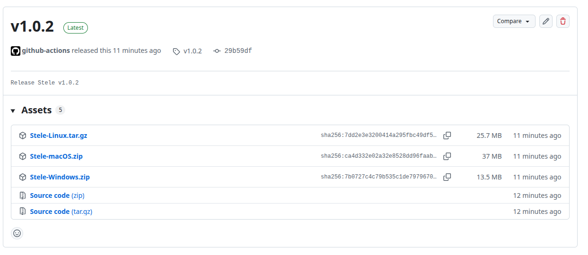

TEI-inspired markup · historical languages
Annotate the text, not its structure.
Stele provides two complementary tools for digital epigraphy: a browser-based stand-off annotator and a desktop application for complete research projects, including controlled vocabularies, archaeological contexts, multiple chronologies and parallel text versions.
𐀒𐀜𐀰 𐀀𐀂𐀒𐀨𐀩𐀁 𐀥𐀟𐀰𐀇𐀛
Try online
No installation. Runs in your browser.
The web version lets you understand Stele in five minutes. Open a text, select a span, add annotations and export TEI-XML. Data stay in your browser and are never sent to a server.
- Stand-off annotation with code-point offsets
- Overlapping and discontinuous annotations
- Linear B support with a syllabogram palette
- Import/export TEI-XML and JSON
Stele Desktop
Complete DBMS. Runs on your computer, your data stays yours.
The desktop version is the real working tool for an epigraphic project. A local database (GeoPackage / SQLite) brings together archaeological contexts, objects, parallel text versions, controlled vocabularies with semantic networks, multiple chronologies, geolocated places, bibliography.
- Parallel versions aligned line↔line (diplomatic, transliteration, translation…)
- Controlled vocabularies with inherited hierarchical relations
- Visual chronologies with multiple datings by method
- Contexts and objects with archaeological fields + geolocation
- TEI-XML export for interoperability
Download and launch Stele Desktop
- Open the release page. Use the large download button above. It detects your operating system automatically; if it identifies the wrong one, select macOS, Windows or Linux from the links below the button.
-
Choose the correct release asset. On GitHub, download one of the first
three files shown under Assets:
Stele-Linux.tar.gz,Stele-macOS.ziporStele-Windows.zip. The two Source code archives are not application installers.
Select the package matching your operating system from the first three assets. -
Extract the downloaded archive, open the extracted folder, and launch Stele:
Detected device
macOS
Double-click
Stele Desktop.app.Detected deviceWindows
Double-click
Stele Desktop.exe.Detected deviceLinux
Open a terminal in the extracted
Stelefolder and runbash run.sh.
Security notice: because Stele is distributed independently, your operating system or antivirus software may ask you to confirm that you trust and want to open it. Continue only when the package was downloaded from the official Stele GitHub release page.
No manual Python installation is required. Project data are stored outside the application folder, so replacing the application does not overwrite an existing project.
Which version should I use?
| Online version | Stele Desktop | |
|---|---|---|
| Purpose | Try, demonstrate or annotate one text | Manage a complete epigraphic research project |
| Data location | Your browser (localStorage) | A .gpkg file on your computer |
| Multiple texts | — | ✓ N documents, N versions each |
| Controlled vocabularies | — | ✓ semantic network and hierarchy |
| Archaeological contexts | — | ✓ geometry, deposits and excavation techniques |
| Objects and composition | — | ✓ decoration, restoration and measurements |
| Visual chronology | — | ✓ multiple datings by method |
| Full-text search | — | ✓ FTS5 across all texts |
| Installation | None | Double-click standalone bundle |
| Internet connection | Only to load the page | Only for place geocoding |
Presentation · 19 slides
Relational databases for epigraphy
Explore the conceptual model behind Stele: entities and relations, archaeological context, physical supports and fragments, text versions, annotations, semantic networks and cross-text analysis.
If the embedded viewer is unavailable, use Open presentation online or download the PowerPoint file.
Desktop tools · selected examples
From textual annotation to cross-document analysis
Stele connects close reading, structured knowledge and exploratory analysis in the same local research environment. Select any preview to inspect the interface at full size.
Annotation and knowledge modelling
Create stand-off annotations, align parallel versions and organise shared entities through editable semantic relations.
Research and analytical tools
Move from recurring associations to archaeological cross-reference, formula search and close comparison of different witnesses or versions.
Technical foundations
Open standards
Markup follows the TEI philosophy, using NFC code-point offsets for any Unicode script: Linear B, hieroglyphs, Greek, Latin or CJK. The database uses the OGC GeoPackage format and opens directly in QGIS.
Immutability and versioning
Annotated text versions are immutable. Editing creates a new version and remaps annotations through common prefixes and suffixes. Annotations crossing an edit remain attached to the previous version and are explicitly reported.
Semantic network
Dictionary terms—people, places, deities and concepts—are shared records. A change to the hierarchy of “Ares” automatically applies to every annotation that points to that record.
Local-first
No account, remote server or forced synchronisation. Your .gpkg is your project:
copy it, share it or open it in other tools.